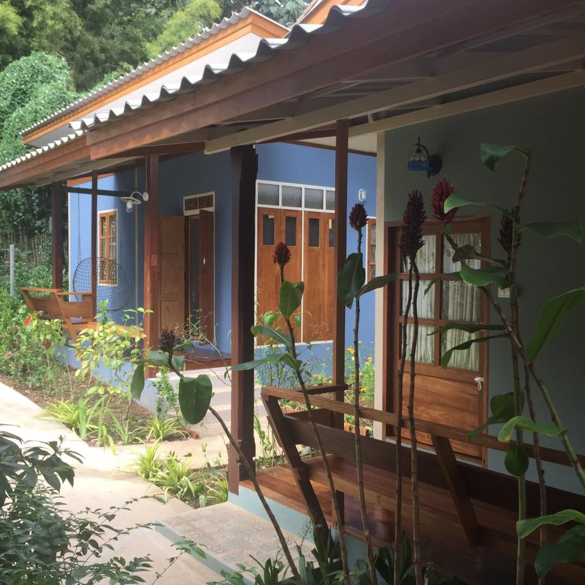
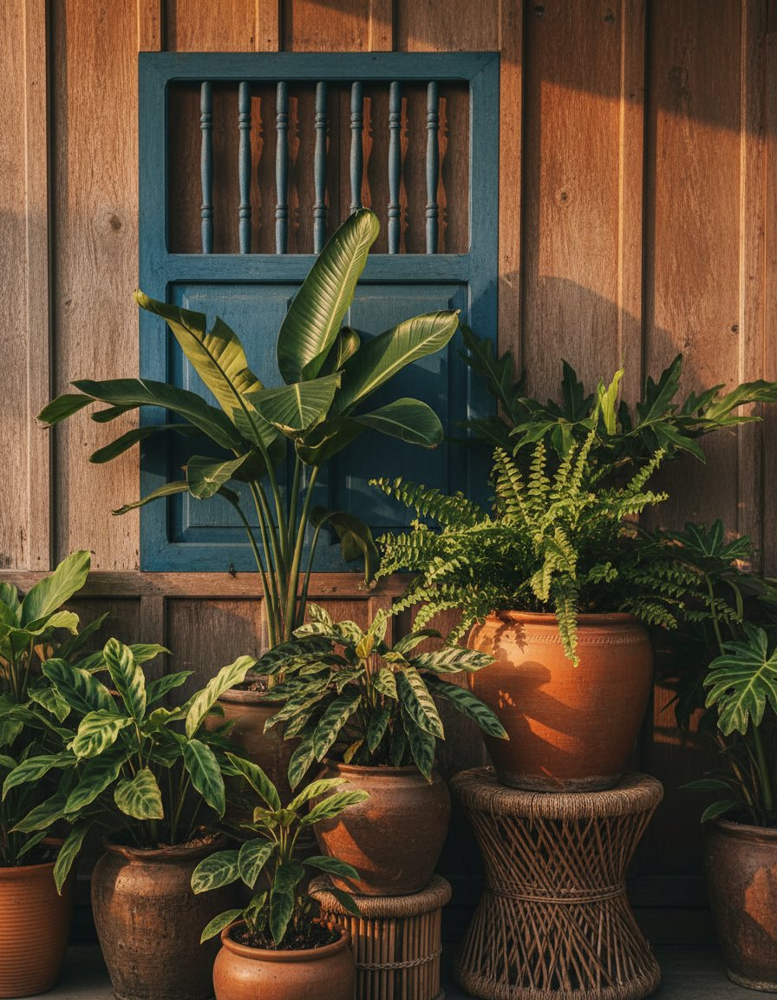
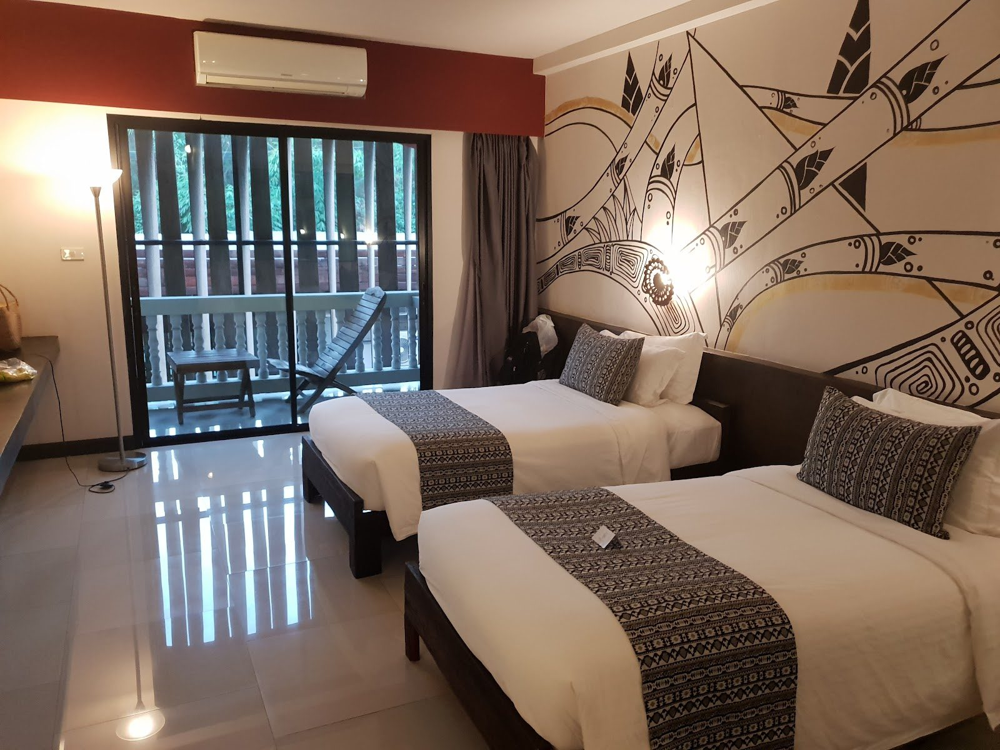
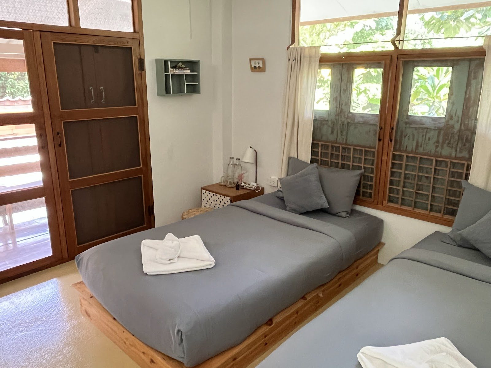

A small teak house with a garden, one lane from a forest temple. Run by two sisters, kept quiet on purpose.
ไปยาลน้อย is the Thai ellipsis mark — the little symbol that means and so on… It's a fitting name for a house that keeps the list short: a clean room, a green garden, breakfast in the morning, and quiet you can actually hear.
Two sisters run it, and it shows — friendly, unhurried, nothing trying too hard. Book once, and you tend to remember it for years.

The soi runs straight to Wat Umong — the old forest temple with meditation tunnels and a lake of turtles under the trees. Walk out in the morning, before the day gets loud, and you'll understand the address.


A dining room full of old, nostalgic bits and pieces. Rooms that are simple and spotless. A garden you can hear. It's the kind of small, personal place you find once and keep coming back to.
Guests keep writing the same three words: felt like home …
Rustic charmFull of rustic charm, with a beautiful garden and nostalgic touches in the dining area. The rooms are clean and housekeeping is excellent.David Toh
Felt at homeA professional guesthouse with a very personal touch. We instantly felt at home — quiet and cozy.Google review
Two sistersOwned and run by two sisters, and everything was just fantastic.Google review
Message or call the house — the sisters will hold you a room. Everything else, the garden takes care of.